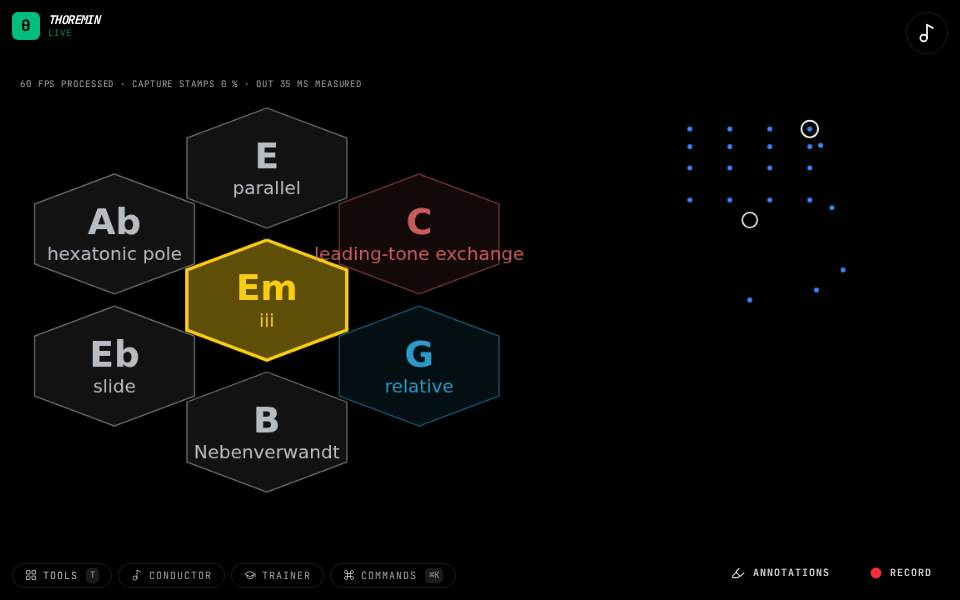

Instruments › Chords and harmony
Tonnetz Wheel

What to do
- Hold a chord with your left hand.
- Push toward a move and hold.
- These moves leave the key: each changes one or two notes of the chord.
The chord wheel with moves that wander out of the key, the way film music slides between distant chords.
How it works
The Tonnetz is a map of chords where neighbours share two of their three notes. Each move here changes one note (or two) and keeps the rest: C major to C minor, C major to A minor, C major to E minor, and so on. Because no key holds them in, a few moves take you far from where you started while every single step still sounds close. Each move undoes itself, so pushing the same way twice brings you back.
Settings
In Chord wheel: the move set (the key's moves or the Tonnetz's), and everything else as on the Chord Wheel.
Its settings: Chord wheel. Every knob: the manual.